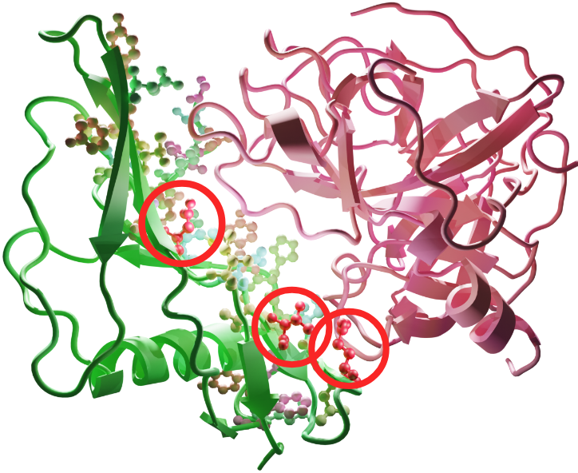

|
Jiri Sedlar I'm a research scientist at the Czech Institute of Informatics, Robotics and Cybernetics (CIIRC), Czech Technical University in Prague, in the IMPACT group led by Josef Sivic. I did my PhD at Charles University, where I was advised by Jan Flusser. Email / Google Scholar / arXiv / LinkedIn |
{kind=link}
ResearchI'm interested in machine learning, protein engineering, robotics, computer vision, and image processing. |
|

|
Learning to design protein-protein interactions with enhanced generalization
Anton Bushuiev, Roman Bushuiev, Petr Kouba, Anatolii Filkin, Marketa Gabrielova, Michal Gabriel, Jiri Sedlar, Tomas Pluskal, Jiri Damborsky, Stanislav Mazurenko, Josef Sivic International Conference on Learning Representations (ICLR), 2024 webserver / code / dataset / arXiv Introducing a large dataset of protein-protein interfaces and a model for predicting the change in binding affinity of two protein structures upon mutation (ddG prediction). |
|
Machine Learning-Guided Protein Engineering
Petr Kouba, Pavel Kohout, Faraneh Haddadi, Anton Bushuiev, Raman Samusevich, Jiri Sedlar, Jiri Damborsky, Tomas Pluskal, Josef Sivic, Stanislav Mazurenko ACS Catalysis, 2023 paper Perspective and survey on challenges in Protein Engineering and progress enabled by Machine Learning. |
|

|
Effects of Alzheimer’s Disease Drug Candidates on Disordered Aβ42 Dissected by Comparative Markov State Analysis (CoVAMPnet)
Sérgio M. Marques, Petr Kouba, Anthony Legrand, Jiri Sedlar, Lucas Disson, Joan Planas-Iglesias, Zainab Sanusi, Antonin Kunka, Jiri Damborsky, Tomas Pajdla, Zbynek Prokop, Stanislav Mazurenko, Josef Sivic, David Bednar In Submission, 2024 code / data / bioRxiv Introducing a method CoVAMPnet for interpretation and comparison of Markov State Models of Molecular Dynamics. The method is demonstrated on a case study of comparing dynamics of different systems of Aβ 42 peptide. |
|
This page is using the design provided by Jon Barron. |